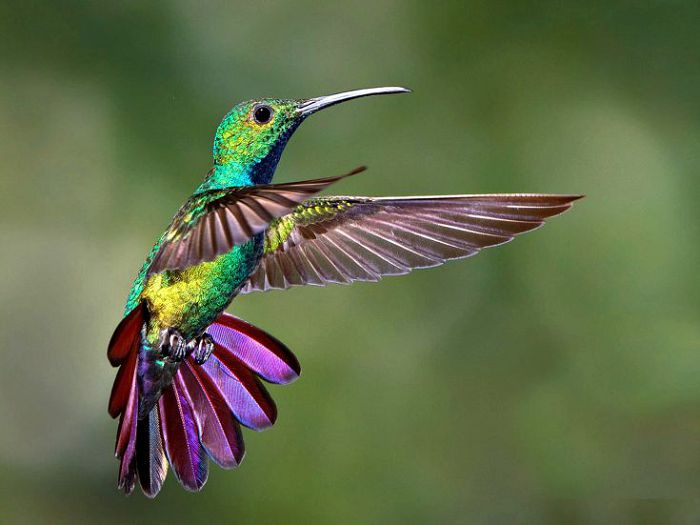
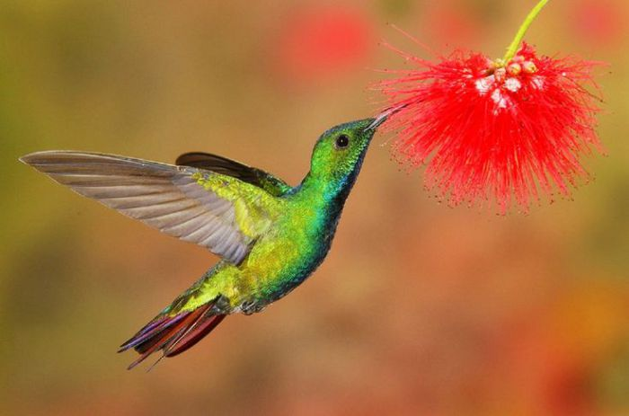
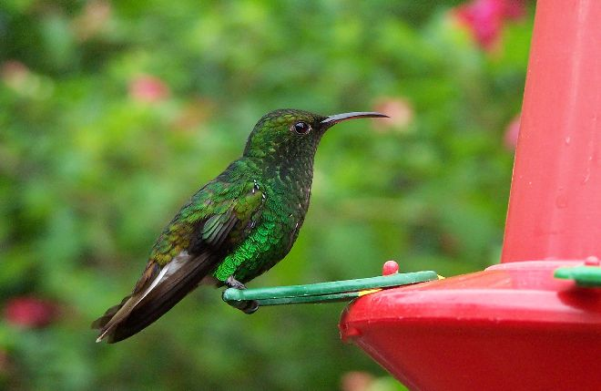
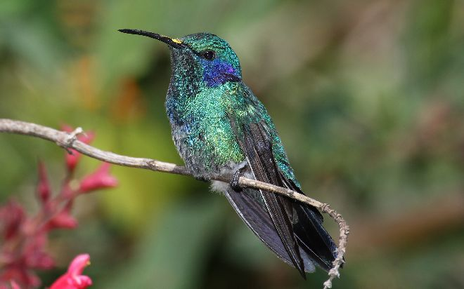
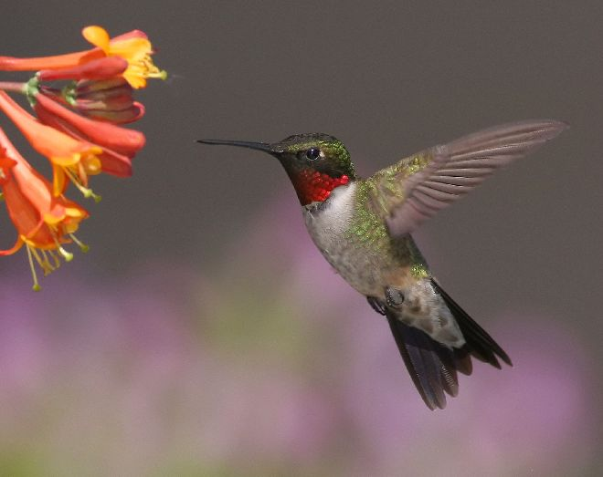
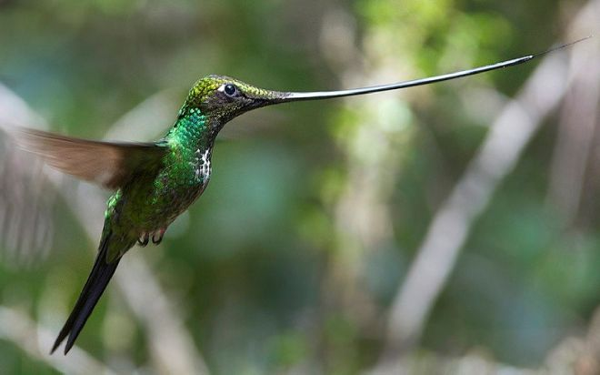
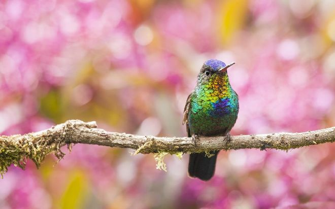
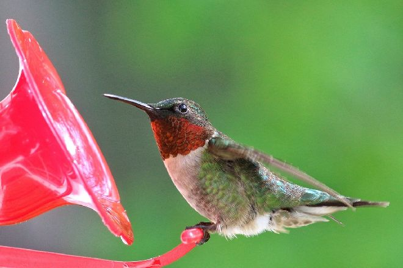
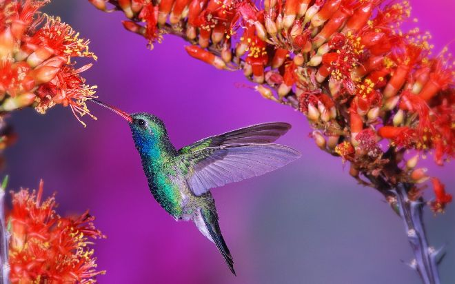
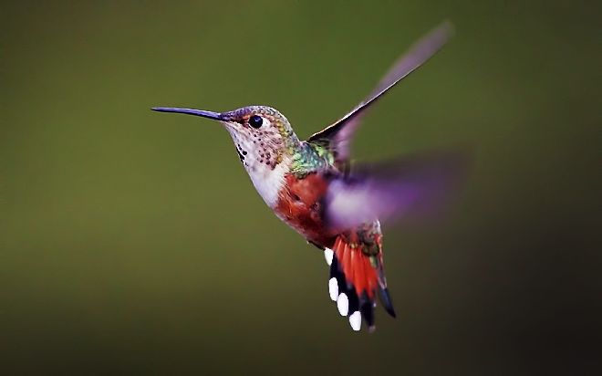

Семейство колибри — это более 300 видов маленьких и подвижных птичек, окрашенных во все цвета радуги.
Колибри похожи на яркие цветы, нектаром которых они питаются. Их родина — тёплые широты Нового Света.
Самый крупный представитель семейства — гигантский колибри, обитающий на западе Южной Америки.
Он достигает размеров обычной ласточки.
Колибри отличаются от других птиц длинным тонким клювом, верхняя
половинка которого обхватывает краями нижнюю, отсутствием щетинок у основания клюва,
длинным, глубоко
раздвоенным языком, который может далеко выдвигаться изо рта, длинными, острыми крыльями.
Оперение колибри очень яркое, с красивым металлическим отблеском. Самцы окрашены ярче самок и часто
носят дополнительные украшения, вроде хохолков или длинных хвостов.
Несмотря на свои крохотные размеры, в полете колибри может развивать скорость до 80 км/час.
Но летает она не так, как другие птицы. Колибри способна летать как головой, так
и хвостом вперед,
зависать на месте, взлетать и снижаться практически вертикально. Такими замечательными полетными качествами
малышка обязана своим сильным и гибким крылышкам,
способным изменять угол взмаха. Другими словами, крылышки колибри могут
двигаться вверх-вниз, вперед-назад, а при зависании описывают восьмерку, что позволяет ей сохранять равновесие в воздухе.

Колибри почти целый день проводят в воздухе, очень редко садясь на землю. Эти птички так быстро машут крыльями,
что их даже нельзя рассмотреть.
В секунду колибри делает 50–100 взмахов крыльями! Это позволяет птичке зависать
на одном месте, например перед цветком, нектаром которого колибри собирается полакомиться.
Для того чтобы
справляться с такими затратами энергии, у колибри очень большое (относительно общих размеров) сердце, которое сокращается
до 1000 раз в секунду!
Колибри впадают в оцепенение ночью, в холод и при недостатке пищи. При этом температура их тела уменьшается
с 39– 43 0C до 14,5–21 0C, а обмен веществ резко замедляется.
У колибри очень хороший аппетит, позволяющий съедать птичке в день пищи в два раза больше собственного веса.
Кстати, распространённое мнение, что колибри питаются
только цветочным нектаром, ошибочно. Эти птицы охотно поедают
мелких насекомых, а некоторые виды и вовсе питаются только животной пищей.
Колибри приносят пользу цветам, опыляя их,
поэтому за долгое время совместной эволюции многие виды цветов приспособились «обслуживать» определённые виды колибри.
Часто бывает так, что никакая другая птица не может полакомиться нектаром — слишком узко и глубоко! Когда колибри собирает
нектар, пыльца с цветков попадает на её оперение.
Перелетая на другой цветок, птица переносит и пыльцу. Таким образом
совершается опыление растения. Большинство видов колибри гнездится на деревьях и кустах;
некоторые виды, подобно стрижам,
прилепляют свои гнёзда слюной к скалам и листьям. Материалом для гнезда могут стать мох, паутина, пух или перья.
В кладке одно или два яйца.
Высиживанием и последующим выкармливанием занимается самка. Самец в это время охраняет гнездо.

Удивительно, но такие маленькие и, казалось бы, беззащитные птички становятся очень агрессивными во время высиживания.
Если самец посчитает, что его семье грозит опасность, то он, не задумываясь, будет атаковать врага своим тонким и острым
клювом.
Ножки у колибри очень маленькие, слабые и непригодные для ходьбы
Колибри не только обладают удивительной способностью летать «задом наперед», но и с удовольствием путешествуют
«верхом»
на более крупных птицах, например казарках. Чтобы избежать в своем путешествии проблем, колибри зарывается
в перья хвоста казарки и преспокойно перемещается к месту назначения.
Исследователи считают, что казарки ни в коем случае
не противятся такому странному соседству: вполне возможно, что колибри избавляют их от вредных доставляющих неудобства
мелких насекомых.
Надо заметить, что своей «дружбой» с крупными перелетными птицами отличаются не только колибри, но и некоторые
другие маленькие пернатые. Очевидцы утверждают, что своими глазами видели, как гуси и журавли переносили на себе
различных мелких пташек.
Несмотря на то, что ученые-орнитологи не могут объяснить это удивительное явление,
многие из них охотно признают его.







